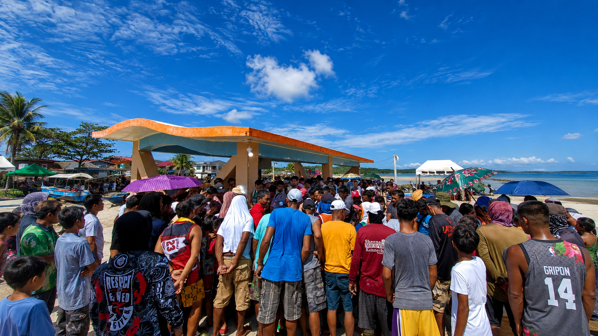

History & Origins
Patnanungan is a fifth-class island municipality in the province of Quezon, Philippines, belonging to the Polillo Islands group situated in the Philippine Sea. Its name is believed to come from the local words "pata" (feet) and "nungan" (inquiry), referring to visitors asking about animal tracks.
For centuries, the remote territory existed as a barrio under the administration of Polillo, later serving as a vital strategic hideout for Filipino guerrilla forces during World War II. Following a brief post-war transfer to the municipality of Burdeos in 1948, Patnanungan officially achieved its independent municipal district status on June 18, 1961.
Quick Facts
Barangays
Geography & Natural Resources

Rich coral reef ecosystems surround the island, supporting fish, sea turtles, and invertebrates — the backbone of the community's fishing-based economy.
Dense secondary forests and lowland agricultural areas where residents cultivate root crops, vegetables, and coconut for food and income.
White-sand beaches and rocky outcroppings framed by the Philippine Sea to the east and Lamon Bay to the west.
Camote, cassava, gabi, and leafy vegetables grow locally. Coconut farming supplies both food and a small copra income stream.
Community & Livelihood

Fishing & Farming
The people of Patnanungan are primarily fishermen and farmers whose lives follow the natural rhythms of tide and harvest. Fishing is not merely an economic activity here — it is a cultural practice passed down through generations, with each family holding knowledge of local grounds, seasonal patterns, and traditional techniques.
Small-scale farming supports the community with crops like camote, cassava, gabi, and various leafy vegetables. Coconut farming provides both food and a small income stream through copra production.
Growing Tourism
Women in the community often run sari-sari stores, manage household finances, and produce handicrafts and food products for local sale. This gender-complementary economic model has helped maintain family stability in a resource-limited island setting.
Tourism has begun to supplement the local economy, with some families converting spare rooms to guesthouses or offering bangka services and guided island tours. This gradual shift is being approached cautiously, with emphasis on preserving the island's natural and cultural heritage.